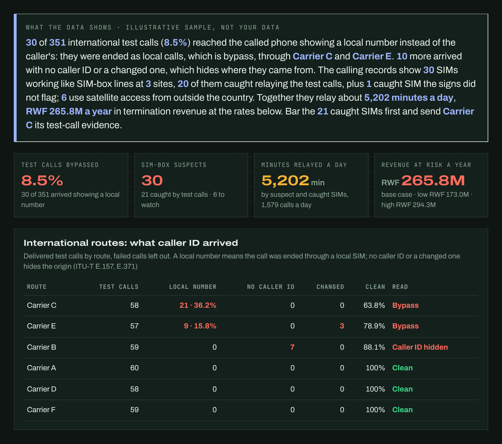

Field note · Interconnect assurance
International call bypass fraud: economic impact, satellites and NTN networks
Bypass is a routing and settlement offence, not a technology. What it costs, how to prove it from records operators already keep, and what satellites change: the test is the same whether a call crossed fibre, microwave or a satellite.
In four points
- A call becomes bypass when it is placed abroad but ended as a local call, usually through a SIM box, so the terminating network and the state are paid for a local call instead of an international one. In February 2026 the ITU-T listed SIM boxes, call masking and refiling as “deemed impermissible traffic” (Recommendation E.371).
- Losses are proven with four records, not estimated: test calls on each route, the carrier agreements, the terminating network’s calling records, and the settlement ledger.
- Satellite carriage is not bypass. Direct-to-device satellite service opens three specific gaps: traffic landing outside a licensed gateway, caller ID or traffic class being altered, and phones across a border appearing domestic.
- Each gap has a record that closes it: test calls on every route, caller-ID checks at the gateway, and the access type and network-verified location of satellite calls in calling records (3GPP Release 18).
01What bypass is, and what it is not
The same call, two paths
Licensed path · paid as an international call
Paid: the international termination rate, plus any levy. Caller ID: the caller’s own, with its country code (ITU-T E.157).
Bypass path · paid as a local call
Paid: a local call, often inside a bundle. Caller ID: a local SIM’s, so the person called cannot see who is calling or from where. All it takes is a softswitch, an internet link and a box of local SIMs.
ITU-T Recommendation E.157 expects a calling number that crosses a border to carry at least the originating country code, passed on unchanged by transit networks. Bypass breaks exactly that. Recommendation E.371, approved by ITU-T Study Group 2 on 13 February 2026, defines deemed impermissible traffic as international traffic “that may be contrary to the legal and regulatory framework of a Member State”, and lists call refiling, call masking, SIM boxes (“one way of achieving call masking”), OTT bypass and incoming international calls with an unknown caller ID among its types.
Not bypass: a visitor roaming on your network who calls home; an app-to-app call that never touches the phone network; international traffic carried over a satellite link into a licensed gateway; a direct-to-device satellite service run with a licensed operator through its core. The technology that carried the call is not the test.
02Four records prove it
Where was the call placed?
- Record
- Test calls placed abroad, with the caller ID sent and the route used
- Proves
- That a route delivers international calls as local ones, with the relaying SIM’s number as evidence
How was it routed?
- Record
- Carrier agreements and route plans
- Proves
- Which partner handed the traffic on, and at what rate
Where and how did it end?
- Record
- The terminating network’s calling records
- Proves
- Which SIMs relay calls, from which cells and devices, and for how many minutes
How was it settled?
- Record
- Interconnect billing, reconciled with gateway counts
- Proves
- The minutes declared and paid against the minutes actually delivered
Test calls and calling records cover each other’s blind spots. A test call catches a SIM on its first relayed call; calling records catch the SIMs no test call happened to reach. On a SIM, the signs are plain: it is busy (30 or more calls a day), one-way (5% or fewer of its calls received), it calls many different people, it sits on one or two cells, it shares a device with other SIMs, and it works at night. These thresholds are settings to tune, not laws. Machine-learning models can weigh the same signs across millions of SIMs; what they return is a ranking to test, not proof.
At the gateway, caller ID can be checked. CEPT’s ECC Report 338 (June 2022) describes checking whether a domestic mobile number shown on an incoming international call is really roaming abroad, and replacing, flagging or blocking invalid caller IDs. Italy put such filters into force under AGCOM Delibera 106/25/CONS, for fixed numbers from 19 August 2025 and mobile numbers from 19 November 2025; within weeks almost 43 million calls had been blocked, about 1.3 million a day and 5.7% of calls received in the period observed. That rule targets spoofing, but the control is the same one that exposes masked international traffic.
03The economic impact, measured rather than guessed
Who pays: the terminating operator loses termination revenue; the state loses levies and taxes on international traffic where they exist, and part of its tax base; licensed carriers and gateways are undercut by an unlicensed competitor; customers get a stranger’s local number, poorer calls and callbacks to numbers that are not the caller’s. E.371 lists loss of revenue, enforcement and competition problems, and degraded service and security for users among the impacts.
- Republic of Congo, 21 August 2026: the regulator ARPCE dismantled its sixth SIM-box network of the year, in Brazzaville. More than 422,000 minutes had been diverted, an estimated CFA 42 million lost in two months: about CFA 100 a minute. TechAfrica News, 28 Aug 2026
- Rwanda, 2017: a syndicate traced to Rubavu cost about Rwf 1 billion from January to October 2017, Rwf 450 million to the regulator and Rwf 550 million to the operator. The New Times, 10 Dec 2017
- Worldwide: the CFCA’s 2025 survey puts losses to all forms of telecom fraud at US$41.82 billion; bypass is one of many types. CFCA via TNS, 7 Jan 2026
- Rwanda’s scale: mobile networks received 30.5 million international minutes in the second quarter of 2025, 41% more than a year earlier. RURA ICT statistics, Q2 2025, Table 10
Each 1% of Rwanda’s Q2 2025 international incoming minutes, if bypassed, per quarter
1% = 305,265 minutes a quarter; RWF 140 a minute is the gap used in the tool’s sample. The gap per minute is an assumption, not a published rate: replace it with the termination rate in your agreements, less what a local minute earns. A real loss figure needs the four records above.
04Satellites and NTN: what changes, and what does not
- Standards: 3GPP made non-terrestrial networks normative in Release 17 (NR-NTN and IoT-NTN, with new L-band and S-band operating bands n255 and n256). Release 18 added network verification of a phone’s reported location, because a satellite cell can be too large for national regulatory needs. Release 19 adds regenerative payloads, and studies store-and-forward and phone-satellite-phone links. 3GPP NTN overview
- Spectrum: WRC-27 agenda item 1.13 studies new mobile-satellite allocations for direct links between satellites and ordinary phones, between 694/698 MHz and 2.7 GHz. East African preparation flags national authorisation, cross-border coordination and beam spillover. UCC agenda item brief, Jul 2026
- Africa: Airtel Africa and SpaceX agreed a direct-to-cell service across 14 markets, Rwanda included, starting with SMS and messaging and subject to approvals. Tanzania’s regulator requires satellite operators to deliver through licensed mobile operators, who keep control of the spectrum. MEA Tech Watch, 18 Dec 2025 · Space in Africa, 8 Aug 2025
Why satellite carriage alone is not bypass: when a direct-to-device call enters the licensed operator’s core, carries the right caller ID, leaves through the licensed gateway and is settled at the international rate, the satellite is just another radio link. The openings are elsewhere.
Landing outside a licensed gateway
- What happens
- A satellite internet terminal feeds a SIM box or VoIP gateway. The satellite is only transport; the offence is the local re-dial.
- Record that closes it
- Test calls per route; calling records at the SIM box’s cell
- Control
- Terminal licensing, landing-rights conditions, gateway audits
Caller ID or traffic class altered
- What happens
- International traffic is presented as domestic, or carried as data and turned into a voice call with a local number.
- Record that closes it
- Caller ID sent against caller ID received; minutes declared against minutes delivered, partner by partner
- Control
- E.157 caller ID at gateways; E.371 mitigation; monthly reconciliation
Phones across a border appearing domestic
- What happens
- A phone outside the country attaches to a domestic satellite cell and places calls that look local.
- Record that closes it
- The access type of each call (satellite types such as NR_LEO, 3GPP TS 29.571) and the network-verified location
- Control
- Both fields mandatory in records of satellite calls; calls verified outside the territory flagged or refused
05What regulators and operators can do now
Test every international route every month, satellite routes included, and give each carrier its own evidence.
Operators · regulatorITU-T E.371 Annex A.1Reconcile declared international minutes with gateway counts and terminating records, partner by partner. Rwanda’s 2012 gateway traffic-verification regulation lists undeclared incoming international traffic among fraudulent traffic.
Regulator · operatorsRURA regulation, Article 9Check caller ID at the international gateway: country code present, domestic mobile numbers on international calls checked against roaming status, unknown caller IDs replaced or flagged.
Gateway operatorsITU-T E.157 · ECC Report 338 · E.371 A.6Read calling records for SIM-box signs every day; bar SIMs with the evidence attached, and share device and SIM blacklists between operators.
OperatorsFraud and revenue assuranceFor satellite service, make the access type and network-verified location mandatory in calling records; tie landing rights to routing through licensed gateways, with lawful interception and settlement visible; put satellite routes into test-call campaigns.
Regulator · licensees3GPP Release 18 · TS 29.571Work across borders: share evidence with neighbouring regulators and report misused numbering to the ITU’s shared list.
RegulatorsITU-T E.371 clause 9.2
06Try it on your own records
I built International Bypass Lens to run these checks in a browser. It reads calling records, test-call results, or both. On its illustrative sample, 30 of 351 international test calls (8.5%) arrived showing a local number, all through two routes; the calling records show 30 SIMs working like SIM-box lines at 3 sites, six of them on satellite access with a verified location outside the country, about RWF 265.8M a year at the sample’s rates.
The sample runs free. Your own files are read in your browser and never uploaded; they open with a 3-day code. Full version: send 30 days of calling records and your test-call results, and I return the SIMs to bar, the evidence per route for your carriers and the regulator, and the revenue to recover, in 10 working days at a fixed price.

The question is never “did a satellite carry this call?” It is four questions, each with a record behind it: where was the call placed, how was it routed, where and how did it end, and how was it settled. Answer those, and the technology question answers itself.
Sources
- ITU-T E.371 (02/2026), Deemed impermissible traffic
- ITU-T E.157 (11/2009), International calling party number delivery
- CEPT ECC Report 338, CLI spoofing (June 2022)
- Lentepubblica: AGCOM anti-spoofing rules, 43 million calls blocked (12 Sep 2025)
- TechAfrica News: ARPCE dismantles sixth SIM-box network in Brazzaville (28 Aug 2026)
- The New Times: Three arrested over Rwf1bn SIM box fraud (10 Dec 2017)
- TNS: The telecom fraud landscape in 2026, citing the CFCA 2025 survey (7 Jan 2026)
- RURA ICT sector statistics, second quarter 2025
- RURA, Regulations for International Gateway Traffic Verification System (2012), Article 9
- 3GPP: Non-Terrestrial Networks (NTN) overview
- 3GPP TS 29.571, clause 5.4.3.2: RatType values
- UCC: WRC-27 agenda item 1.13 brief (Jul 2026)
- MEA Tech Watch: Airtel Africa to roll out Starlink Direct-to-Cell across 14 markets (18 Dec 2025)
- Space in Africa: Tanzania’s satellite-to-mobile guidelines (8 Aug 2025)
Prepared by Frutos · Kigali · Trial tools · WhatsApp